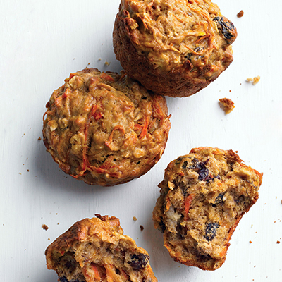
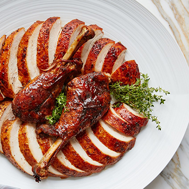

"This applesauce is delicious! I make it for my younger brother all the time. He loves it, and he hates canned applesauce!"
Click for recipe!
INGREDIENTS:
4 apples - peeled, cored and chopped
3/4 cup water
1/4 cup white sugar
1/2 teaspoon ground cinnamon
DIRECTIONS:
In a saucepan, combine apples, water, sugar, and cinnamon. Cover, and cook over medium heat for 15 to 20 minutes, or until apples are soft. Allow to cool, then mash with a fork or potato masher.
Morning Glory Muffins I

Prep Time: 15 Minutes
Cook Time: 20 Minutes
Ready In: 35 Minutes
Servings: 18
"This muffin has a little bit of everything - carrots, raisins, apple butter, wheat germ, nuts. A perfect start for your day!"
Click for recipe!
INGREDIENTS:
1 1/2 cups all-purpose flour
1/2 cup whole wheat flour
1 1/4 cups white sugar
1 tablespoon ground cinnamon
2 teaspoons baking powder
1/2 teaspoon baking soda
1/2 teaspoon salt
2 cups grated carrots
1 apple - peeled, cored, and chopped
1 cup raisins
1 egg
2 egg whites
1/2 cup apple butter
1/4 cup vegetable oil
1 tablespoon vanilla extract
2 tablespoons chopped walnuts
2 tablespoons toasted wheat germ
DIRECTIONS:
Preheat oven to 375 degrees F (190 degrees C). Lightly oil 18 muffin cups, or coat with nonstick cooking spray.
In a medium bowl, whisk together eggs, egg whites, apple butter, oil and vanilla.
In a large bowl, stir together flours, sugar, cinnamon, baking powder, baking soda and salt. Stir in carrots, apples and raisins. Stir in apple butter mixture until just moistened. Spoon the batter into the prepared muffin cups, filling them about 3/4 full.
In a small bowl, combine walnuts and wheat germ; sprinkle over the muffin tops.
Bake at 375 degrees F (190 degrees C) for 15 to 20 minutes, or until the tops are golden and spring back when lightly pressed.
Out of this World Turkey Brine

Servings: 12
"Best brine for smoked turkey around. This recipe was given to me by my uncle. He is always smoking meat."
Click for recipe!
INGREDIENTS:
2 gallons water
1 1/2 cups canning salt
3 tablespoons minced garlic
1 tablespoon ground black pepper
1/4 cup Worcestershire sauce
1/3 cup brown sugar
DIRECTIONS:
In a saucepan, combine apples, water, sugar, and cinnamon. Cover, and cook over medium heat for 15 to 20 minutes, or until apples are soft. Allow to cool, then mash with a fork or potato masher.